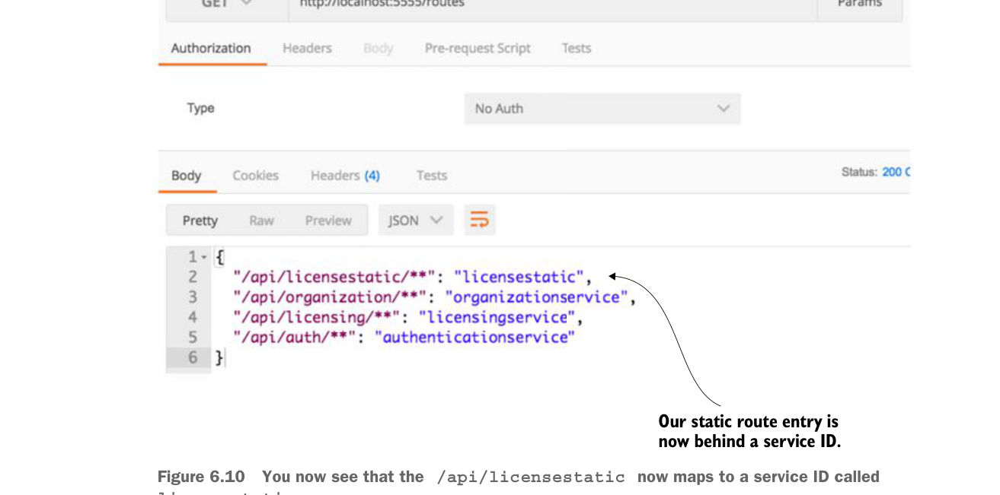

Khi cấu hình này đã sẵn sàng, một lần gọi tới endpoint /routes giờ cho thấy tuyến /api/licensestatic đã được ánh xạ tới một service ID tên là licensestatic. Hình 6.10 minh họa điều này.

Bạn giờ thấy rằng
/api/licensestatic ánh xạ tới một service ID tên là licensestaticTrước đó trong chương, tôi đã nói về cách bạn có thể có nhiều service gateway, nơi các quy tắc và chính sách định tuyến khác nhau sẽ được áp dụng dựa trên loại dịch vụ được gọi. Với các ứng dụng không phải JVM, bạn có thể thiết lập một máy chủ Zuul riêng để xử lý các tuyến này. Tuy nhiên, tôi thấy với các ngôn ngữ không dựa trên JVM, bạn nên thiết lập một instance Spring Cloud “Sidecar”. Spring Cloud sidecar cho phép bạn đăng ký các dịch vụ không phải JVM với một instance Eureka rồi